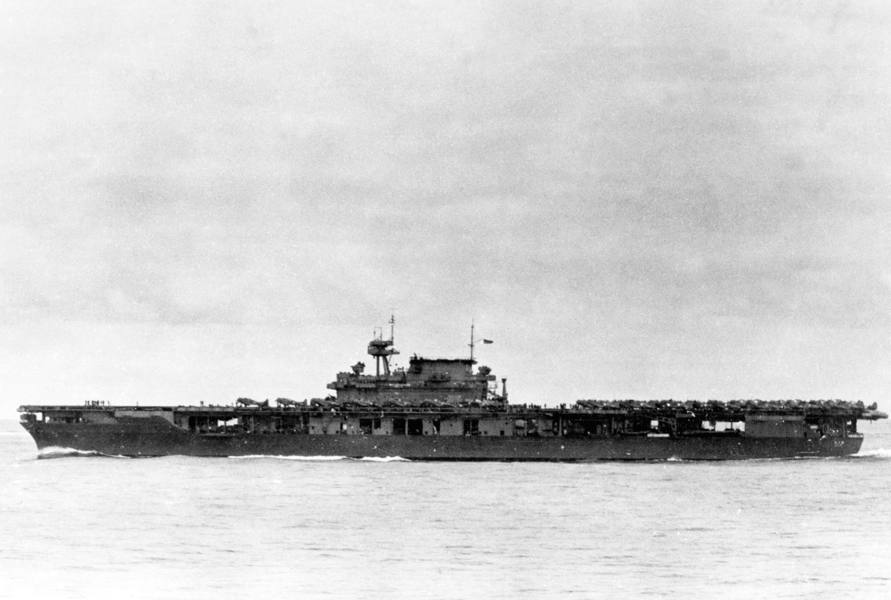
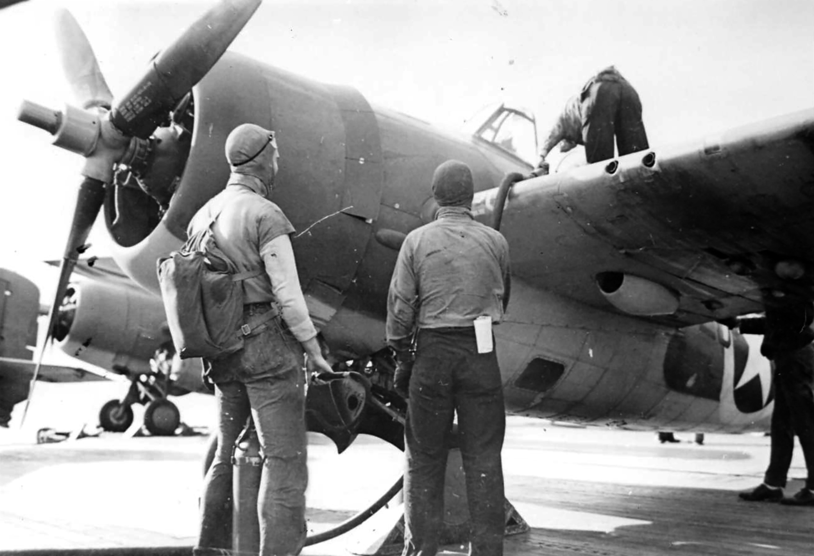
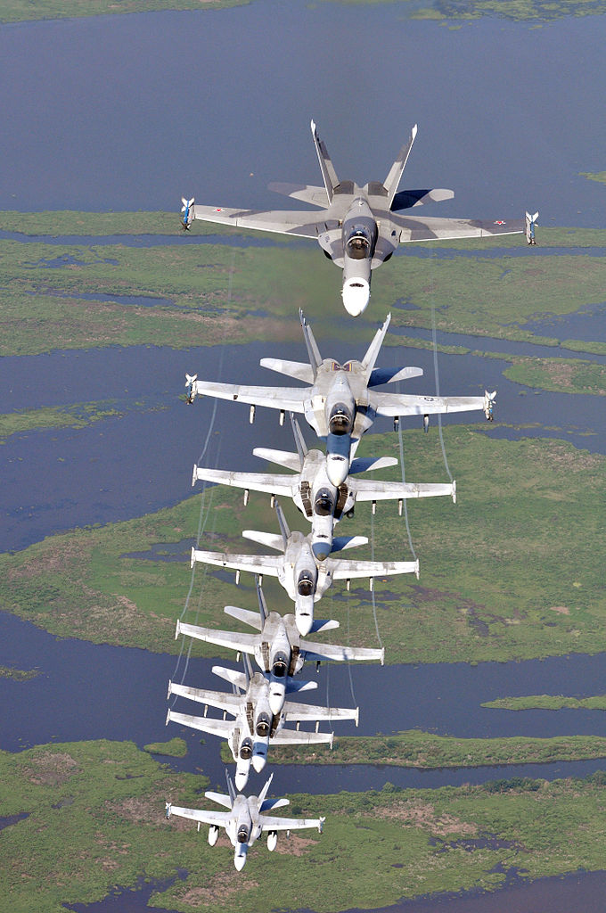

미드웨이에서의 레이더 이야기 (5) - CXAM 레이더의 활약
게시: 2024-01-11T06:30:31+09:00
<꼬리가 긴 폭격기> 미해군 함재기들의 공격으로 카가, 소류, 아까기의 3척이 한꺼번에 완파되는 피해를 입고나서도 일본 기동부대의 공격력은 아직 살아있었음. 4번째 항모인 소류가 바로 몇 km 북쪽에서 그 처참한 모습을 보면서 복수를 다짐하고 있었기 때문. 소류에서는 10시 58분 18대의 발(Val) 급강하 폭격기와 6대의 제로센 전투기로 구성된 공격편대가 발진. 이들은 운이 좋았음. 이함해서 보니, 방금 공격을 마치고 돌아가는 미해군 돈틀리스 급강하 폭격기들이 눈에 들어왔고, 이들을 멀찍이 뒤에서 따라감으로서 쉽게 미해군 항모전단을 찾을 수 있었음. 그 꼬리가 긴 돈틀리스들의 모함은 바로 요크타운. 한편, 쳐들어갈 때는 무거운 폭탄과 항공유를 잔뜩 싣고 가느라 비행 시간이 2시간 정도나 걸렸던 요크타운의 돈틀리스들은 폭탄도 연료도 바닥나 가벼워진 상태인데다 요크타운이 일본 기동부대 쪽으로 마중을 나와준 덕분에, 폭격을 완료하고 회항한지 불과 1시간도 안 된 11시 50분경 요크타운 인근에 도착. 이들의 모습은 요크타운의 CXAM 레이더에 선명히 포착되었음.

(미드웨이 해전이 시작되던 1942년 6월 4일의 USS Yorktown (CV-4)의 모습. 자세히 보면 함교 위에 CXAM 레이더의 'flying bedspring' 프레임이 보임.)
그런데 가만히 보니 아군 돈틀리스 편대 저 뒤쪽에 정체를 알 수 없는 또 하나의 커다란 편대가 날아오고 있었음. 방위각은 225도, 즉 남서쪽이었고 거리는 약 50km. 요크타운의 관제사 페더슨 소령은 이건 틀림없이 돈틀리스의 뒤를 밟은 일본 폭격기들이라고 판단. 그는 즉각 상공에 떠있던 4대의 CAP 와일드캣들에게 방향 지시를 한 뒤, 아직 갑판에서 재급유 중이던 대기 와일드캣들에게도 연료 가득 채우지 않아도 되니 그냥 무조건 당장 날아오르라고 명령. 이어서 엔터프라이즈와 호넷 상공에 떠있던 와일드캣들에게도 지원을 요청. 결과적으로 총 19대의 와일드캣들이 24대의 일본 함재기들에게 달려듬. 또한 CXAM 레이더 덕분에 이제 곧 공습을 당하게 된다는 것을 알게된 요크타운에서는 damage control(피해 최소화)을 위한 준비 작업에 착수. 페더슨 소령은 귀함하는 돈틀리스들에게 연료가 바닥 나건 말건 착함을 미루고 한쪽으로 피해있으라고 경고. 또한 와일드캣들에게 급유를 하느라 갑판 위에 노출되어 있던 3천 리터짜리 급유 탱크는 격납고로 내려보내는 것을 포기하고 그냥 뱃전으로 던져 버림. 또한 모든 급유 호스에서 가솔린을 빼냄. <부활 항모 요크타운> 그러나 컴퓨터가 없어서 종이와 연필로 방위각과 거리를 계산하여 와일드캣들을 vectoring, 즉 유도하는 것은 시간이 걸리는 일이고, 약 250km/h로 날아오는 발 폭격기들은 1분에 4km 이상을 접근. 요크타운의 관제사들이 흥분 속에서 2~3분 동안 계산을 해서 와일드캣에게 어느 각도 어느 속도로 날아가라고 지시를 마치고 났을 때 이미 거리는 50km에서 40km로 줄어 있었음. 그리고 와일드캣들이 유도에 따라 일본 편대와 교전을 시작한 곳은 요크타운으로부터 불과 27km 정도 떨어진 곳. 27km는 발 폭격기들이 6분 안에 돌파할 수 있는 거리. 그래도 19대의 전투기가 18대의 폭격기를 막아내는 것은 어렵지 않은 일. 그러나 18대의 폭격기에는 6대의 제로센이 딸려 있었고, 확실히 전투기 호위가 딸린 폭격기들은 잡아내기 어려운 상대. 아무리 용감한 전투기 조종사라고 해도, 바로 자기 등 뒤에 적 전투기가 달려들고 있는 상황에서 폭격기 사냥에 집중하는 것은 어렵기 때문. 결국 8대의 발 급강하 폭격기들이 와일드캣들과 호위함들의 맹렬한 대공포 화망을 뚫고 요크타운에 달려 들었고, 기어이 폭탄 3발을 명중시킴.

(폭탄을 맞은 요크타운. 적어도 겉보기에는 꽤 평화로와 보이는데, 갑판 아래 격납고에서는 화재가 발생하여 승조원들이 연료를 가득 채우고 1천 파운드 폭탄까지 장착한 돈틀리스에 불이 옮겨 붙지 않도록 필사의 노력을 다하고 있었음. 함교 위의 CXAM radar에 주목.)
3발의 폭탄들은 제각각 큰 피해를 입혔는데, 가장 큰 피해는 2번째 폭탄. 좌현에서 날아든 이 폭탄은 비행갑판을 뚫고 들어와 하필이면 기관실에서 나오는 연돌, 즉 보일러 배기관에서 폭팔. 이로 인해 6대의 보일러 중 5대에서 불이 꺼지고 요크타운 기관실은 시커먼 연기와 뜨거운 증기가 가득 참. 그 와중에도 살아남은 1번 보일러의 기관원들은 자리를 지키고 보일러의 운전을 계속하여 요크타운의 전기 시스템이 계속 동작하도록 해줌. 이 1번 보일러의 기관원들이야말로 요크타운을 구한 영웅들. 이 1번 보일러까지 꺼졌다면 레이더는 물론 이산화탄소를 내뿜는 소화시설도, 배수 펌프도 작동을 할 수 없어서 요크타운은 그 때 끝장 났을 것임. 그러나 어쨌든 보일러들 대부분이 꺼지는 바람에 요크타운은 처음에는 6노트로 속도가 줄었고, 결국 완전히 정지하게 됨. 그러나 1시간 뒤에는 필사적인 노력으로 다시 항행을 시작하여 처음에는 5노트, 이어서 다시 20노트의 속도를 냄. 이렇게 요크타운이 멈춰섰다가 다시 5노트의 속도를 내기 시작했을 때 요크타운의 함장 벅매스터(Buckmaster)는 'My speed 5' (내 속도 5)라는 신호 깃발을 올림. 이어서 함교에 커다란 새 성조기를 게양. 전투 상황에서 스스로 움직이지 못하는 항모는 보안상의 이유로 호위 구축함이 어뢰를 쏘아 자침시키는 것이 당시의 국룰이었으므로, 항모가 멈춰선 것은 그야말로 그 항모의 죽음을 뜻하는 것이었음. 그런데 다시 달리기 시작했으니 이건 죽었다 부활하는 느낌이 들었던 것. 요크타운의 모든 승조원들은 이 새로 게양된 성조기를 보고 말로 형용할 수 없는 감동을 느꼈다고.
<하이냐 로우냐> 그러나 마침내 화재를 진압하고 비행갑판 위에 올라와 있던 전투기에 연료를 주입할 즈음에 다시 CXAM 레이더에 뭔가가 잡힘. 이번에도 약 50km의 거리. 요크타운은 부랴부랴 손님 맞을 준비를 시작. 상공에 떠있던 와일드캣 6대 중 4대를 벡터링하여 보내고 2대는 남아서 요크타운 상공을 지키도록 함. 그리고 갑판에서 재급유를 받던 10대의 와일드캣도 연료를 얼마나 채웠건 상관하지 않고 그냥 무조건 이함시킴. 그 10대 중 8대는 불과 87리터, 즉 연료 탱크의 16%만 채운 상태라서 거의 이함 하자마자 다시 내려와야 할 상태였음에도 날려보냄. 대신 이들은 최악의 경우에도 아군함 근처에 불시착 할 수 있도록 요크타운 상공에서 머물게 하고, 상공에 남아있던 원래의 와일드캣 2대를 벡터링하여 침범해오는 일본 편대쪽으로 보냄.

(F4F Wilcat의 내부 연료 탱크 용량은 545리터. 사진은 1942년 11월, 프랑스령 북아프리카에 대한 연합군 상륙작전인 Operation Torch에서 1차 폭격을 엄호하고 돌아온 뒤 USS Ranger (CV-4) 갑판 위에서 재급유 중인 와일드캣.) 문제는 이것들이 어떤 고도로 날아오는 것인지 알 수 없었다는 것. 아까의 1차 공습 때도 벡터링을 위한 방위각 계산에 2분간 머뭇거리다 결국 요크타운이 폭탄 3방을 얻어맞는 참사가 벌어졌기 때문에, 페더슨 소령은 고도를 알 수 없었음에도 무조건 빠른 결정을 내려야 했음. 결국 그는 레이더상에 나타난 적기가 고공으로 침투하는 급강하 폭격기라고 보고 처음 내보내는 4대의 와일드캣을 4.5km ~ 5.5km 상공에서 상하로 층층이 쌓은 형태로 내보냄. 그렇게 여러 고도로 나누어 보내면 어떤 고도로 날아오는지 모르는 적기를 찾는데 도움이 될 거라고 본 것. 또한 적기가 저고도로 날아오는 뇌격기일 수도 있으므로, 이어서 내보낸 2대의 와일드캣은 더 낮은 고도로 내보냄. 선물옵션으로 치자면 주가가 오르는 것에 베팅하는 콜 옵션에 4만원을 걸고, 주가가 내리는 것에 베팅하는 풋 옵션에도 2만원을 걸어 리스크를 헷징한 것.
과연 페더슨은 이 선물옵션 투자에서 대박을 쳤을까 쪽박을 찼을까?

(페더슨 소령이 1차로 벡터링해서 내보낸 와일드캣 4대는 일반적인 편대 대형인 좌우로 펼쳐진 사선 대형으로 내보낸 것이 아니라, 맨 위 전투기와 맨 아래 전투기 사이에 1km 간격을 두고 위아래로 층층이 쌓은 대형으로 내보냈다는 이야기)